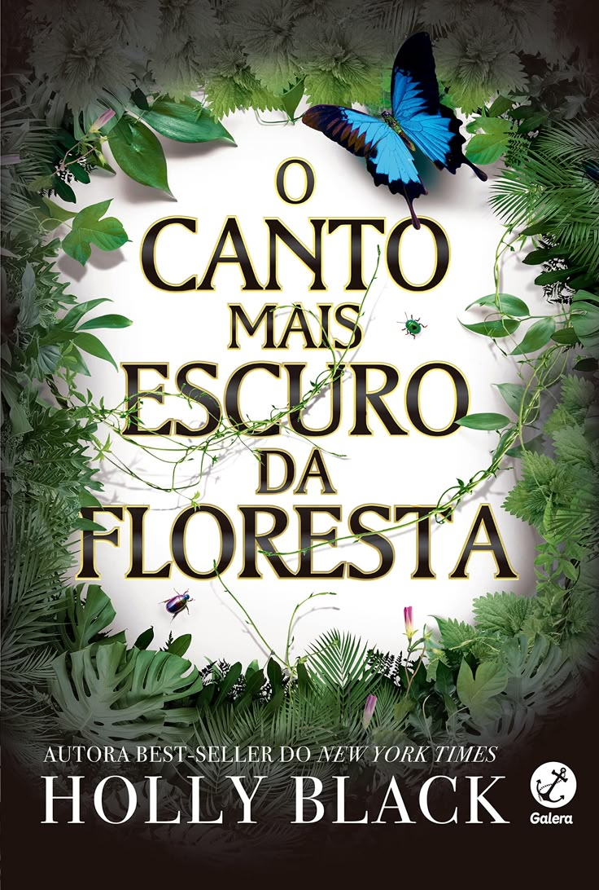

O Canto Mais Escuro Da Floresta
Holly Black
Gênero:Fantasia| Ano:2017| Páginas:326 | Editora:Galera Records
Sipnose:
Hazel e seu irmão, Ben, moram em uma cidade onde humanos e fadas convivem. A magia aparentemente inofensiva desses seres atrai turistas de todas as partes, que querem ver de perto as maravilhas do lugar e, principalmente, o garoto de chifres e orelhas pontudas que descansa em um caixão de vidro. Hazel e Ben eram fascinados pelo garoto quando crianças. Mas, eles sabem que o garoto de chifres nunca acordará… Até que um dia ele acorda. Agora, os irmãos precisam se tornar os heróis que fingiam ser e desvendar os mistérios que envolvem aquele príncipe com chifres.
"Antes havia uma busca, uma pela qual ela estava disposta a abrir mão de tudo; mas a verdade é que algumas buscas simplesmente não se concluem apenas por abrirmos mão de tudo."
Sobre o autor:
Holly Black é autora best-seller do The New York Times de mais de trinta livros de fantasia para jovens adultos e crianças. Ela foi finalista dos prêmios eiser e Lodestar, assim como vencedora dos prêmios Mythopoeic, Nebula e da medalha Newbery. Seus livros já foram traduzidos para 32 idiomas e adaptados para o cinema. Holly vive em Massachusetts com o marido e o filho em uma casa com uma biblioteca secreta.